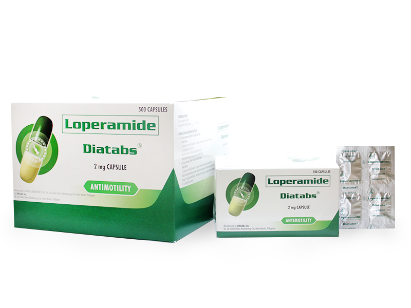

Medicine Guide For Diarrhea

• Treats acute diarrhea by slowing down bowel movements.
• Improves stool consistency by reducing fluid and salt loss in the intestines.
üî• How It Works:
Contains loperamide, an antidiarrheal agent that reduces intestinal motility, making the stool firmer.
üí° Common Use:
For acute diarrhea relief.
United Laboratories. (n.d.). Diatabs Loperamide HCl Capsules. Retrieved from Unilab
Adults:
Take 2 capsules initially, followed by 1 capsule after each loose bowel movement.
üö´ Maximum Dose: 16 mg (8 capsules) per day.
❗ Discontinue after 2 days if no improvement occurs.
✅ Usage Tip:
Drink plenty of fluids and electrolytes to prevent dehydration.
DIATABS
Description
üíä Purpose:‚Ä¢ Treats acute diarrhea by slowing down bowel movements.
• Improves stool consistency by reducing fluid and salt loss in the intestines.
üî• How It Works:
Contains loperamide, an antidiarrheal agent that reduces intestinal motility, making the stool firmer.
üí° Common Use:
For acute diarrhea relief.
United Laboratories. (n.d.). Diatabs Loperamide HCl Capsules. Retrieved from Unilab
Guide
✅ Dosage:Adults:
Take 2 capsules initially, followed by 1 capsule after each loose bowel movement.
üö´ Maximum Dose: 16 mg (8 capsules) per day.
❗ Discontinue after 2 days if no improvement occurs.
✅ Usage Tip:
Drink plenty of fluids and electrolytes to prevent dehydration.

IMODIUM
Description
üíä Purpose:Treats occasional diarrhea by reducing overactive bowel movements.
üî• How It Works:
Contains loperamide, which slows the intestinal process, reducing stool frequency.
üí° Common Use:
For diarrhea relief.
Johnson & Johnson. (n.d.). Imodium Loperamide HCl Capsules. Retrieved from Imodium PH
Guide
✅ Dosage:Adults:
• Take 4 mg (2 capsules) initially after the first loose stool.
• Then, 2 mg (1 capsule) after each subsequent loose stool.
üö´ Maximum Dose: 16 mg (8 capsules) per day.
✅ Usage Tip:
Drink plenty of fluids and electrolytes to prevent dehydration.

LOPERAMIDE HCL-LOMOTIL
Description
üíä Purpose:Treats diarrhea, including chronic and acute cases.
üî• How It Works:
• Combines diphenoxylate and atropine:
• Diphenoxylate reduces bowel movement.
• Atropine reduces cramping.
üí° Common Use:
For persistent diarrhea.
Pfizer. (n.d.). Lomotil (Diphenoxylate/Atropine). Retrieved from Pfizer PH
Guide
✅ Dosage:Adults:
Take 2 tablets four times daily.
üö´ Maximum Dose: 16 mg (8 capsules) per day.
✅ Usage Tip:
Avoid consuming dairy products as they can worsen diarrhea.

RITEMED-LOPERAMIDE HCL
Description
üíä Purpose:Relieves acute and chronic diarrhea.
Reduces stool volume for ileostomy and colostomy patients.
üî• How It Works:
Contains loperamide, which slows down intestinal movement, reducing fluid loss.
üí° Common Use:
For acute and chronic diarrhea relief.
Ritemed. (n.d.). Ritemed Loperamide HCl. Retrieved from Ritemed
Guide
✅ Dosage:Adults:
Take 2 capsules initially, followed by 1 capsule after each loose bowel movement.
üö´ Maximum Dose: 16 mg (8 capsules) daily.
❗ Discontinue after 2 days if no improvement occurs.
✅ Usage Tip:
Stay hydrated with oral rehydration salts (ORS) to prevent dehydration.